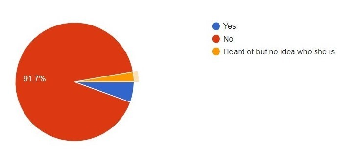

Black Women Organising
This website exists to highlight the long history of black womens contribution to politics, campaigning and political change in Britian.
This project is led by three Leeds Uni history students keen to promote the contributions of black women to British history and particularly the pursuit of social change. We selected this project focus as, through our continued study of history into higher education, and personal extracurricular interests, we are able to reflect that this is a depressingly neglecting area of attention in the education system and social consciousness of the majority in the UK. We do not wish to overlook the contribution of all black people to social and political change in the UK but needed to limit our focus in order to enable us to produce a coherent and accessible project, and give ourselves a manageable workload! We also recognise that there is an intersection in the standards that women and people of colour are held to in the political sphere and the prejudice they face, making the recognition of black women's contributions even more critical. Unfortunately, given the neglect of this history there are limited sources available about many pioneering black women. This presented even more of a challenge to our project given we completed it during C19 and couldn't access in person archives. This is by no means an exhaustive list of brilliant black women in the British political sphere but we hope we have elevated the story of some overlooked black women in this project.
We intentionally did not restrict our time frame for a number of reasons. In our research we found that black women have been contributing to politics and community activism in the UK for centuries, and in awareness of the collective amnesia concerning this that our education system creates, we did not want to be complicit in this and create an inaccurate and reductive picture. Basically we intend to show the breadth of black British women's active contribution to change in the country. We hope to illuminate through the time period covered that this is not a new phenomenon. The 18th- 21st centuries are a well documented period of British history, in which significant political, social and economic change occured. The foundations of our society are largely seen in this period and this is emphasised through our education system. We therefore want to mirror this historiographical trend and identify how black women contributed to the breadth of this period. While there is an increasing visibility of black women in the British political and campaigning sphere, our research shows that this is still insufficient in public consciousness.
1800s
We can have a subheading/ some extra info here if we want...
Phillis Wheatley (1753-1784)


First ever African woman to be published in Britain and America in 1773
Born in West Africa; sold as a slave to an American family
Moved to England age 20
Her first volume of poetry was published
Her work was used as evidence that enslaved people were more than capable of intellectual originality
and had a monumental influence on the anti-slavery movement
1900s
We can have a subheading/ some extra info here if we want...
Catherine Ross (1951-)
 Catherine Ross is an educator, voluntary sector specialist and historian. Catherine and her family emigrated from Saint Kitts when she was 7 and settled in Nottingham. Catherine, and her daughter Lynda-Louise, founded Museumand, the first museum in the UK dedicated to celebrating and recognising the valuable contributions made by Caribbean people to the UK in 2015.
Catherine Ross is an educator, voluntary sector specialist and historian. Catherine and her family emigrated from Saint Kitts when she was 7 and settled in Nottingham. Catherine, and her daughter Lynda-Louise, founded Museumand, the first museum in the UK dedicated to celebrating and recognising the valuable contributions made by Caribbean people to the UK in 2015.
Catherine was also the guest editor of the 2020 Black History Month website and commented, “Black people have always made history and always will- but it’s equally important that Black people take the lead on how that history is discovered, explored, researched, recorded, archived, curated, exhibited and shared.”
Merle Amory (D.O.B Unknown)
 Merle Amory was the Leader of Brent Council from May 1986. Merle was a Labour councillor and the first Black woman to lead a local authority in the UK. She was 25. Unfortunately there is practically no information about Merle available online. We are in the process of communicating with the Brent County Council and Heritage Team to uncover more about Merle and her achievements in the political sphere.
Merle Amory was the Leader of Brent Council from May 1986. Merle was a Labour councillor and the first Black woman to lead a local authority in the UK. She was 25. Unfortunately there is practically no information about Merle available online. We are in the process of communicating with the Brent County Council and Heritage Team to uncover more about Merle and her achievements in the political sphere.
Olive Morris (1952- 1979)
 Olive Morris was a community activist, leader in the UK Black Panthers, feminist and squatters rights movements. Olive was a member of the youth wing of the British Black Panther Movement, having joined in 1968, and got involved in campaigning for every and all issues: “she was never too busy to offer support.” Olive helped set up supplementary schools, squats and Black Bookshops. In 1974 Olive co-founded the instrumental Brixton Black Women’s Group.
Olive Morris was a community activist, leader in the UK Black Panthers, feminist and squatters rights movements. Olive was a member of the youth wing of the British Black Panther Movement, having joined in 1968, and got involved in campaigning for every and all issues: “she was never too busy to offer support.” Olive helped set up supplementary schools, squats and Black Bookshops. In 1974 Olive co-founded the instrumental Brixton Black Women’s Group.
 In 1975 Olive moved to Manchester to complete a social science degree and embedded herself in the activism of the local Black community. Olive helped form the Black Women’s Mutual Aid and Manchester Black Womens Cooperation whilst studying, and was a founding member of OWAAD in 1978.
In 1975 Olive moved to Manchester to complete a social science degree and embedded herself in the activism of the local Black community. Olive helped form the Black Women’s Mutual Aid and Manchester Black Womens Cooperation whilst studying, and was a founding member of OWAAD in 1978.
“People like Olive inspire you to resist.”
Diane Abbott (1953-)
 Diane Abbott has been MP for Hackney North and Stoke Newington since 1987. Diane’s election in 1987 saw her become the first black woman to sit in the House of Commons. Our research shows Diane is the most well known Black British woman in politics, so we will not focus here on her known story including promotion to the role of Shadow Home Secretary under Jeremy Corbyn.
Unfortunately, throughout her public service Dianne has suffered horrifying levels of discrimination and abuse. Amnesty International found that in the 6 weeks before the 2017 General Election, Diane received 45% of all abusive tweets sent to all female MPs, illustrating the prevalence of misogynoir that riddles British public life.
Diane Abbott has been MP for Hackney North and Stoke Newington since 1987. Diane’s election in 1987 saw her become the first black woman to sit in the House of Commons. Our research shows Diane is the most well known Black British woman in politics, so we will not focus here on her known story including promotion to the role of Shadow Home Secretary under Jeremy Corbyn.
Unfortunately, throughout her public service Dianne has suffered horrifying levels of discrimination and abuse. Amnesty International found that in the 6 weeks before the 2017 General Election, Diane received 45% of all abusive tweets sent to all female MPs, illustrating the prevalence of misogynoir that riddles British public life.
 “One of the most upsetting things is when people, meaning well, will say: ‘Oh, but Diane, you’re so strong.’ Nobody is that strong. Nobody can take the sort of abuse that Meghan had to take and that I’ve had to take. And by dismissing it by saying: ‘Oh black women are strong,’ that’s denying our humanity.”
“One of the most upsetting things is when people, meaning well, will say: ‘Oh, but Diane, you’re so strong.’ Nobody is that strong. Nobody can take the sort of abuse that Meghan had to take and that I’ve had to take. And by dismissing it by saying: ‘Oh black women are strong,’ that’s denying our humanity.”
Valerie Amos (1954-)
 Valerie Amos became the first black female peer in 1997. Valerie reached senior positions in the Labour Party, and in 2003 became the first black woman to serve in the British cabinet. Valerie then became the first black woman, and third ever woman, to lead the House of Lords in 2003, until 2007.
Valerie Amos became the first black female peer in 1997. Valerie reached senior positions in the Labour Party, and in 2003 became the first black woman to serve in the British cabinet. Valerie then became the first black woman, and third ever woman, to lead the House of Lords in 2003, until 2007.
 Valerie has held senior roles at the UN from 2010-15 and became the first black woman appointed to lead a UK university, when she became Director of SOAS in 2016. In August 2020, Valerie became the first Black person to head any college at Oxford University.
Valerie has held senior roles at the UN from 2010-15 and became the first black woman appointed to lead a UK university, when she became Director of SOAS in 2016. In August 2020, Valerie became the first Black person to head any college at Oxford University.
Yvonne Field (1960-)
 Yvonne Field grew up in Deptford, South London, with her Jamaican parents and 9 siblings. Yvonne talks about the experience of being refused a place at Grammar School aged 11 and how this experience committed her to racial justice campaigning. 2014 Yvonne founded, and remains the CEO of, the Ubele Initiative. The Ubele Initiative is committed to addressing the “deep social issues [which] continue to affect our community.”
Yvonne Field grew up in Deptford, South London, with her Jamaican parents and 9 siblings. Yvonne talks about the experience of being refused a place at Grammar School aged 11 and how this experience committed her to racial justice campaigning. 2014 Yvonne founded, and remains the CEO of, the Ubele Initiative. The Ubele Initiative is committed to addressing the “deep social issues [which] continue to affect our community.”
This is done through regional, local and national programmes, international diaspora networking, policy development and campaigning. In the COVID-19 pandemic Ubele have led research into the disproportionate impact of the crisis on charities specific to meeting the needs of BAME communities.
Yvette Williams MBE (D.O.B Unknown)
 Yvette Williams is a community activist, campaigner, and community and diversity specialist. Yvette was an Equality and Diversity policy advisor at the Crown Prosecution Service in London for 14 years, for which she was awarded an MBE in 2012. Yvette is one of the founders of Operation Black Vote and is now a co-founder, coordinator and spokesperson for the Justice for Grenfell campaign.
Yvette Williams is a community activist, campaigner, and community and diversity specialist. Yvette was an Equality and Diversity policy advisor at the Crown Prosecution Service in London for 14 years, for which she was awarded an MBE in 2012. Yvette is one of the founders of Operation Black Vote and is now a co-founder, coordinator and spokesperson for the Justice for Grenfell campaign.
 Yvette's work on this campaign has had significant community level impact since 2017 and has also contributed to keeping the Grenfell tragedy in the public consciousness and maintaining pressure on the Government and their inadequate response.
Yvette's work on this campaign has had significant community level impact since 2017 and has also contributed to keeping the Grenfell tragedy in the public consciousness and maintaining pressure on the Government and their inadequate response.
Dr Shola Mos-Shogbamimu(D.O.B Unknown)
 Dr Shola Mos- Shogbamimu is a highly qualified New York Attorney and Solicitor in England and Wales and powerful womens and civil rights activist. Shola organises social campaigns, scrutinises government policy and contributes to mainstream political commentary. Dr Shola created She@LawTalks to empower aspiring Black, minority ethnic and female students to become leaders in the legal profession. Dr Shola also founded the Women in Leadership publication to drive positive change for minority groups globally. Dr Shola’s book, This is Why I Resist, illuminates the roots of British structural racism. Watch Dr Shola’s Ted Talk here.
Dr Shola Mos- Shogbamimu is a highly qualified New York Attorney and Solicitor in England and Wales and powerful womens and civil rights activist. Shola organises social campaigns, scrutinises government policy and contributes to mainstream political commentary. Dr Shola created She@LawTalks to empower aspiring Black, minority ethnic and female students to become leaders in the legal profession. Dr Shola also founded the Women in Leadership publication to drive positive change for minority groups globally. Dr Shola’s book, This is Why I Resist, illuminates the roots of British structural racism. Watch Dr Shola’s Ted Talk here.
Oona King (1967-)
 Oona King was the second Black woman to be elected to the House of Commons, in 1997 representing Bethnal Green and Bow. Oona was born in Sheffield, grew up in Camden, North London, in a Jewish African- American family. Oona lost her seat in 2005 to George Galloway which concluded an unpleasant electoral campaign, in which Oona faced discrimination for her race and faith. Oona went on to become a senior policy advisor on equalities, diversity and faith to Prime Minister Gordon Brown in 2008, then headed up diversity at Channel 4 in 2009.
Oona King was the second Black woman to be elected to the House of Commons, in 1997 representing Bethnal Green and Bow. Oona was born in Sheffield, grew up in Camden, North London, in a Jewish African- American family. Oona lost her seat in 2005 to George Galloway which concluded an unpleasant electoral campaign, in which Oona faced discrimination for her race and faith. Oona went on to become a senior policy advisor on equalities, diversity and faith to Prime Minister Gordon Brown in 2008, then headed up diversity at Channel 4 in 2009.
Oona was appointed a life peer in 2011, as Baroness King of Bow. In 2016 Oona took a leave of absence from the Lords to become Global Diversity Director at YouTube, and is now Google's Director of Diversity Strategy.
Dawn Bultler (1969-)
 Dawn Butler is a senior Labour party MP who grew up in East London with her Jamaican parents. Dawn was elected MP for Brent South in 2005 and became only the third black woman elected to the House of Commons. Since Dawn has been the first elected Black woman to sit in the British Cabinet (Minister of State for Youth Affairs in 2009) and the first black woman to speak from the dispatch box in December 2009: “the Tories tried to belittle me at that moment in history… they’d all been instructed to put me down.”
Dawn Butler is a senior Labour party MP who grew up in East London with her Jamaican parents. Dawn was elected MP for Brent South in 2005 and became only the third black woman elected to the House of Commons. Since Dawn has been the first elected Black woman to sit in the British Cabinet (Minister of State for Youth Affairs in 2009) and the first black woman to speak from the dispatch box in December 2009: “the Tories tried to belittle me at that moment in history… they’d all been instructed to put me down.”
 Dawn is a keen supporter of the BLM movement and outspoken on issues of injustice. Dawn has highlighted personal experiences of racial profiling and called for Creddisa Dick to resign from the Met Police, and extensive stop and search powers to be revoked.
Dawn is a keen supporter of the BLM movement and outspoken on issues of injustice. Dawn has highlighted personal experiences of racial profiling and called for Creddisa Dick to resign from the Met Police, and extensive stop and search powers to be revoked.
Phyll Opoku-Gyimah/ Lady Phyll (1975-)
 Phyll Opoku-Gyimah, who goes by Lady Phyll, is a leading LGBTQ+ activist in the UK. Lady Phyll co-founded UK Black Pride in 2005, which is “Europe’s largest celebration for LGBTQ people of African, Asian, Caribbean, Latin American and Middle Eastern descent.” Lady Phyll remains one of the event’s trustees and executive directors.
Phyll Opoku-Gyimah, who goes by Lady Phyll, is a leading LGBTQ+ activist in the UK. Lady Phyll co-founded UK Black Pride in 2005, which is “Europe’s largest celebration for LGBTQ people of African, Asian, Caribbean, Latin American and Middle Eastern descent.” Lady Phyll remains one of the event’s trustees and executive directors.
 Lady Phyll has also been a trustee of Stonewall (the largest LGBTQ+ rights organisation in Europe), an executive director of Kaleidoscope Trust (since 2019), and has sat on the Trade Union Council race relations committee. Lady Phyll rejected an MBE in 2016 due to the “toxic legacy” of the British Empire.
Lady Phyll has also been a trustee of Stonewall (the largest LGBTQ+ rights organisation in Europe), an executive director of Kaleidoscope Trust (since 2019), and has sat on the Trade Union Council race relations committee. Lady Phyll rejected an MBE in 2016 due to the “toxic legacy” of the British Empire.
Reni Eddo- Lodge (1989-)
 Reni Eddo- Lodge is an anti-racism, feminist campaigner, writer and journalist. In 2020, Reni became the first black author to top the UK bestseller list with her 2017 text, Why I’m No Longer Talking to White People About Race. “Can’t help but be dismayed by this - the tragic circumstances in which this achievement came about… the fact that it’s 2020 and I’m the first.” The Nielsen Bookscan’s UK top 50 has been recording book sales in 2001, and the summer of 2020 saw the Black Lives Matter movement grow around the world in response to the murder of George Floyd.
Reni Eddo- Lodge is an anti-racism, feminist campaigner, writer and journalist. In 2020, Reni became the first black author to top the UK bestseller list with her 2017 text, Why I’m No Longer Talking to White People About Race. “Can’t help but be dismayed by this - the tragic circumstances in which this achievement came about… the fact that it’s 2020 and I’m the first.” The Nielsen Bookscan’s UK top 50 has been recording book sales in 2001, and the summer of 2020 saw the Black Lives Matter movement grow around the world in response to the murder of George Floyd.
Why I’m No Longer Talking to White People About Race is a celebrated text and is credited with articulating an intersectional approach to discrimination.
Lavinya Stennett (1996-)
 Lavinya Stennett is the founder and CEO of the Black Curriculum, a social enterprise founded in 2019. The Black Curriculum is led by young people and designs teacher training and Black history programmes targeted at ages 8-16. The Black Curriculum was inspired by the absence of Black British history within even the Black History Month classes during Lavinya’s upbringing in South London; these focused on slavery and US civil rights.
Lavinya Stennett is the founder and CEO of the Black Curriculum, a social enterprise founded in 2019. The Black Curriculum is led by young people and designs teacher training and Black history programmes targeted at ages 8-16. The Black Curriculum was inspired by the absence of Black British history within even the Black History Month classes during Lavinya’s upbringing in South London; these focused on slavery and US civil rights.
Lavinya designed the Black Curriculum in response to the far more inclusive, international history she was introduced to when studying African studies and Development studies at SOAS.
Temi Mwale (?1996-)
 Temi Mwale is a social entrepreneur, educator, and community activist.
Temi Mwale is a social entrepreneur, educator, and community activist.
In 2018 she won the Groundwork’s Young Community Leader of the year award. In 2012 Temi founded the 4Front Project. 4Front is a youth led social enterprise that empowers communities and young people to live free from violence. 4Front provides long term support and empowerment services for people aged 11-25 in prison, schools and communities to achieve this.
 Temi also uses her platform to dispel commonly held views about gang crime and hold the state to account on their failure to address the underlying roots of violence.
Temi also uses her platform to dispel commonly held views about gang crime and hold the state to account on their failure to address the underlying roots of violence.
2000s
In the 21st century there is far greater representation of Black Britons in the political mainstream. However, racism directed at Black people in the political sphere persists and representation in the House of Commons, House of Lords, and the top levels of public bodies is far below what would be proportional to the population of the UK.
Since 1987 there has been an increase in Black and Minority Ethnicity MPs elected in the UK at every election, with 65 elected in 2019. This is 10% of our parliament, which is not proportional to the 14.4% of our electorate that is Black or Minority Ethnic. Further, a 2021 YouGov Survey, ‘Unequal Britain: attitudes to inequalities after COVID-19’ demonstrates that a concerning level of racism remains in our society, and research conducted by ITV in 2020 found that over 50% of Black and Minority Ethnicity MPs had experienced racial discrimination by another sitting member of parliament. There is a long way to go.